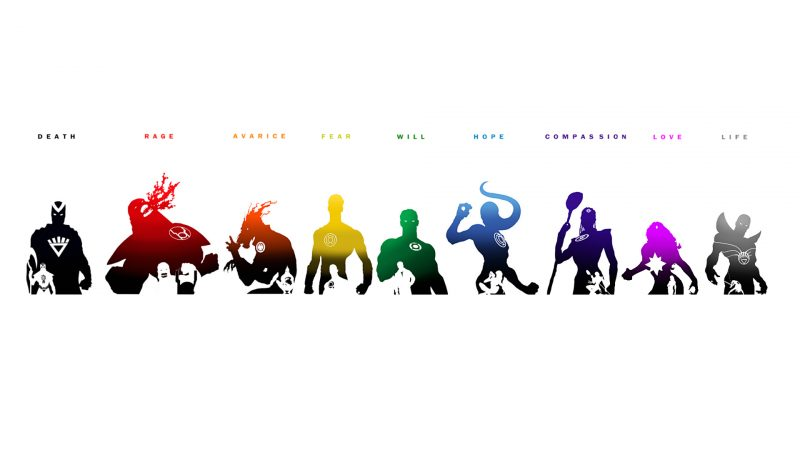

The DC Lantern Mythos
Every light
in the universe.
Nine colors. Nine emotions. Nine Corps.
Pick a light to begin.
The Nine Corps
Each color of the emotional spectrum fuels a Corps of ring-bearers. Dive into their oaths, members, homeworlds, and lore.
Red Lantern Corps
Rage
Atrocitus
Orange Lantern Corps
Avarice
Larfleeze
Sinestro Corps
Fear
Sinestro
Green Lantern Corps
Will
Hal Jordan
Blue Lantern Corps
Hope
Saint Walker
Indigo Tribe
Compassion
Indigo-1
Star Sapphires
Love
Carol Ferris
Black Lantern Corps
Death
Black Hand
White Lantern Corps
Life
Kyle Rayner
What is the Emotional Spectrum?

In the DC Universe, emotion is a tangible force — a spectrum of light that spans the cosmos. At its center burns green, the light of willpower, wielded by the Green Lantern Corps. Toward one end lie rage, greed, and fear; toward the other, hope, compassion, and love. Beyond them all wait death's black and life's white.
Each light empowers those who can channel its emotion through a power ring — and each Corps has its own oath, homeworld, and destiny. This site is your field guide to all of them.
Spectrum chart: DC Comics via WallHere — non-commercial fan tribute.
Keep Exploring
The lore goes deeper. Pick your next stop.